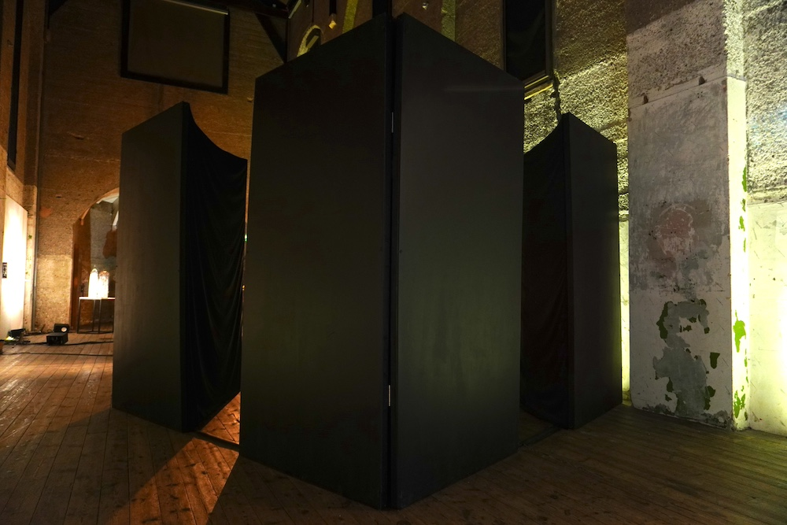
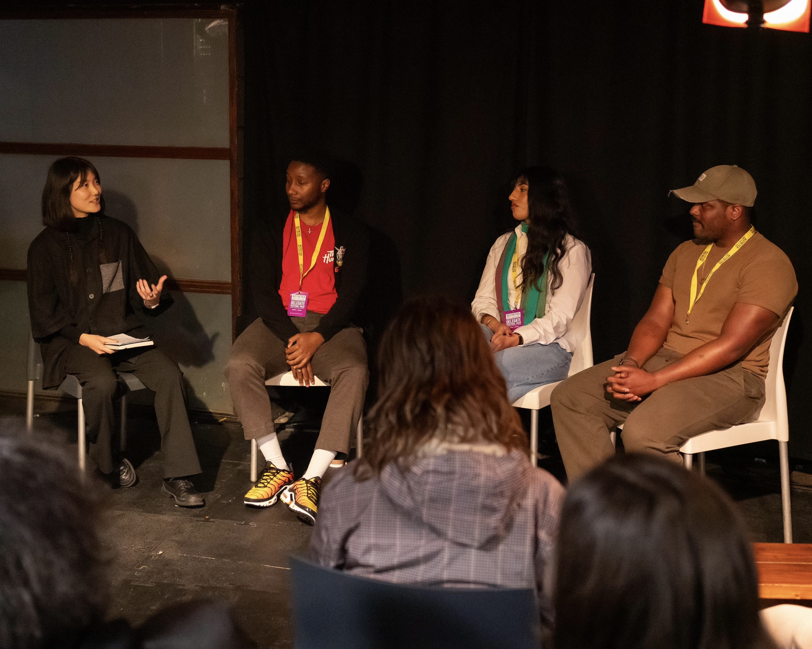
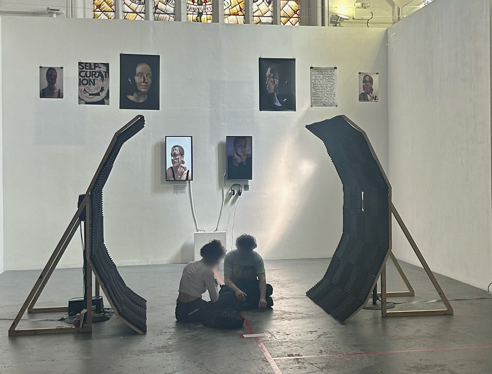
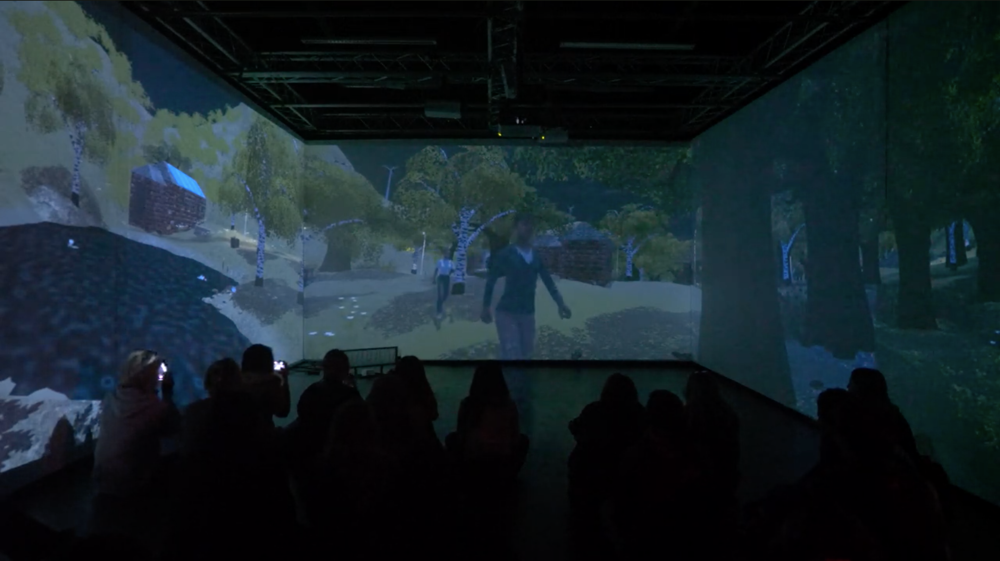
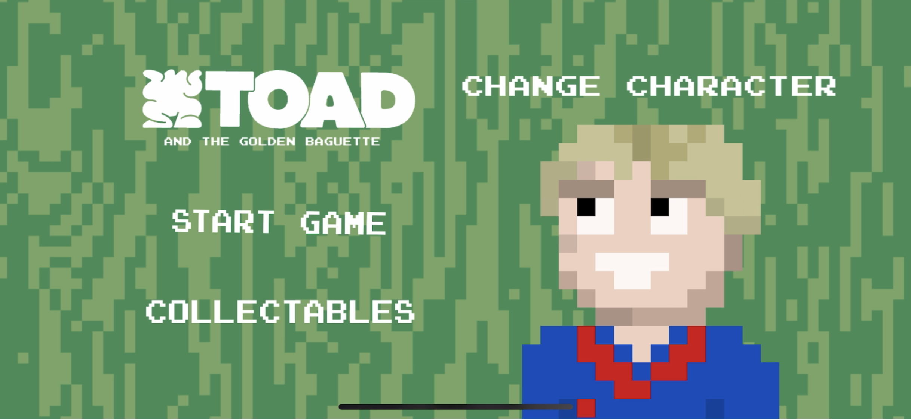
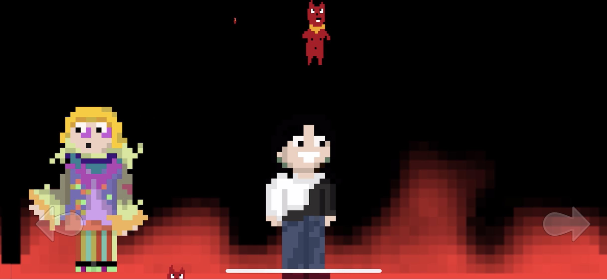

(Dis)connection is a quadraphonic sound installation, along with by four, large sound sculptures.
It explores trauma through technology and destructive interference.
Trauma disrupts not only the psychological and physical connection but also the perception of time, creating a delayed recognition of threat that can repeat uncontrollably and destructively (Caruth, 1996).
The installation embodies this uncontrollable quality by using technology not just to resemble trauma, but to extend and amplify its behaviors.

Where Are You Really From?
Sound Installation, 2024
The perpetual question, "Where are you really from?" does not have a simple answer.
I conducted eight interviews with individuals from diverse backgrounds to expose what the question really means.
Despite participants growing up in different environments, they shared common phrases and experiences. I arranged the audio to create the illusion of an ongoing conversation among them, connecting their personal stories through eight central themes.
These included, belonging, racism, the emotional impact of being “othered,” and uncovering alternative approaches to this question. I further connect these narratives with bespoke piano compositions. In this way, I present myself as the ninth voice, reflecting on my experiences growing up in Norway as a Korean adoptee.
The installation consists of eight speakers on stands. Each speaker represents one of the voices. They are arranged in a five-diameter circle and invite the audience to enter in the center of the space. During live performances, I play the piano softly across all speakers, surrounding listeners with a blend of voices and music.

Otakus Natt Otakus Nacht 阿宅之夜 Otakus Night
2024
Exploring alternate modes of recollection, review and repetition as forms of collaborative and generative non-sense-making, this work may afford a listening that is both restless and tethered, displaced and situated.
These modes function as an experiment in the de-construction of space and sound shapes through multiple languages—Norwegian, German, Mandarin and English. With this, the project challenges conventional structures of communication and listening.
Gesturing towards Anarchitecture and Dadaism, this score explores attention, absurdity, legibility, (mis)recognition and the spatiality of languages. Here, listeners are invited to observe their own listening biases and approaches toward legitimising sounds, syllables and sentences as a form a space-making.
Artists: Amias Hanley, Jiali Yang, Linlin Zhang, and Vendela Håkonsen
Echoes of the Past, Present & Future
Sound Sculpture, 2023
Echoes of the Past, Present & Future, is a psychoacoustic composition created for a parabolic sound sculpture. The echoes are a metaphor for the internal chaos and the reverberations grow distant over time. I question how this distance will shape my artistic practice.
The space between a traumatic past and the present self is uncertain, but it also offers room for self exploration. I explored this by creating various psychoacoustic effects in Pure Data. I created sounds that physically interact with the body which include sensations of movement, dizziness, and pressure through sound alone.

Nowhere Actually Existing
Worldbuilding Piece, 2023
This is Nowhere Actually Existing, and at it's core, it is exactly that. It a digital worldbuilding piece illustrating a place that doesn't exist, and won't ever exist. It is a world that solely comes from my head and my imagination, embodying ideas of simulation being a presentation of a person's perception of reality, originally coming from game designer Doris C. Rusch.
Furthermore, it depicts a idyllic, sustainable community, with animals running around freely and wildly, which come piece together to demonstrate a Utopia, and in particular, my utopia, as it is my perception of reality.
The name in particular comes from the book The Village Against The World which discusses the village and enhabitants of Marinaleda in Spain who created a 'Utopia' and a foundation for a cooperative way of life. However, this world is only a simulation. However perfect it may present as, it has its may flaws and it calls on you to find them. This utopia isn't real, and will assure you you're aware of it.
Artists: Mary Tallontire, VenAur

Toad & the Golden Baguette
iOS game, 2023
Toad Bakery is an independently owned bakery is Camberwell, South London. Zac Slater worked closely with the staff to develop an explorative open world 2D game that told the story of a students trip from Camberwell College of Arts across Peckham Road and into Toad to collect a brand new “Golden Baguette”.
Artists: Zac Slater, VenAur


About
My creative practice explores the phenomenon of trauma through the lens of sound (psychoacoustics, sculptural form, and installation) I focus on certain trauma structures and embed this onto the technology to understand how these behaviors can accelerate through inhuman systems.